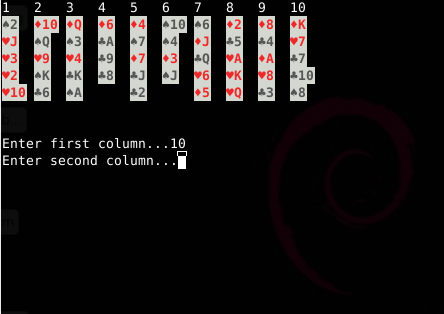

То, чего вы не ждали от калькулятора. Пасьянс на bc
Невинные развлечения с bash больше не кажутся мне чем-то особенным. В качестве своей следующей цели для экспериментов я выбрал GNU bc — консольный калькулятор и скриптовый математический язык программирования в одной коробке. Эта статья наверняка будет полезна всем линуксоидам и юниксоидам, не очень тесно знакомым с bc.

Итак, короткое введение в программирование на bc, кавай и нэки маджонг и гейши пасьянс на чистом bc и поэтессы.
Не помню, когда я впервые узнал про bc, но уже много лет в качестве калькулятора я использую только его. Простой и удобный консольный калькулятор, имеющийся по умолчанию в большинстве дистрибутивов Linux, пленяет своим удобством.
Девятый кю (белый пояс)
Запустить калькулятор можно очевидной командой bc. После этого можно вводить выражения для вычисления. Нажатие на Enter сразу выдаст результат.
sourcerer@debian-laptop:~$ bc
bc 1.06.95
Copyright 1991-1994, 1997, 1998, 2000, 2004, 2006 Free Software Foundation, Inc.
This is free software with ABSOLUTELY NO WARRANTY.
For details type `warranty'.
>2*2
4
>3*(6+1)
21
>5||(1&&0)
1
>5/2
2
В выражениях можно использовать скобки, знаки сложения, вычитания, деления и умножения, а так же && (логическое «и»), || (логическое «или») и! (логическое «не»).
Шестой кю (зеленый пояс)
В калькуляторе bc можно и нужно использовать переменные. Чтобы определить переменную, нужно записать её имя, поставить знак «равно» и затем записать значение переменной. Всё как везде.
>raw=3116
>raw+1
3117
Самые внимательные успели обнаружить, что калькулятор округляет все числа до целых. Причина в следующем: специальная переменная scale, определяющая точность вычислений, по умолчанию равна нулю. Если вы хотите получить результат с точностью до десяти знаков, то присвойте переменной число 10.
>5/2
2
>scale=10
>5/2
2.5000000000
>7/191
.0366492146
В bc есть ещё три специальных переменных. Last хранит в себе прошлый результат вычислений, obase и ibase используются для работы с различными системами счисления.
>1
1
>last+10
11
>obase=16
>last
B
>255+1
100
>ibase=16
>FE+1
FF
Пятый кю (голубой пояс)
Пришло время научиться работать со стандартной библиотекой и подключать сторонние функции. Чтобы использовать стандартную библиотеку языка bc, нужно запускать его с параметром -l:
sourcerer@debian-laptop:~$ bc -l
bc 1.06.95
Copyright 1991-1994, 1997, 1998, 2000, 2004, 2006 Free Software Foundation, Inc.
This is free software with ABSOLUTELY NO WARRANTY.
For details type `warranty'.
>s(3)
.14112000805986722210
В стандартной библиотеке определены следующие функции:
Чтобы использовать сторонние библиотеки, стоит скачать их, например, с сайтов phodd.net/gnu-bc/ иhttp://marcmmw.freeshell.org/esp/programacion/bc.html. Вы найдете процедуры для работы с массивами, интегралами, производными, логикой, генераторы случайных чисел и многое другое. Моя любимая библиотека — для работы с изображениями в формате ppm. Это на bash можно что хочешь генерировать — хоть bmp, хоть jpeg, а здесь всё суровее. Не EГГОГология, конечно, но всё равно.
Запускать bc со сторонними библиотеками следует так:
sourcerer@debian-laptop:~$ bc rand.bc
bc 1.06.95
Copyright 1991-1994, 1997, 1998, 2000, 2004, 2006 Free Software Foundation, Inc.
This is free software with ABSOLUTELY NO WARRANTY.
For details type `warranty'.
>rand(96)
21
Фрактал Мандельброта, рассчитанный в bc и сохраненный в ppm.
Четвертый кю (синий пояс)
Синтаксис bc очень похож на синтаксис Си. Поэтому можно смело использовать команды if, for, while, break, continue, return и расставлять фигурные скобки где не попадя. Только после команд не нужно ставить точек с запятой, для вывода на экран использовать команду print, а для ввода — read. Функции определять командой define. Смотрите:
>define func () {
>for (i=0;i<10;i++) {
>a=a+i
>print a, «\n»
>}
>return 1}
>t=func ()
0
1
3
6
10
15
21
28
36
45
>print t
1
Третий кю (коричневый пояс)
В bc, к сожалению, нельзя работать с файловым вводом-выводом. Весь ввод через read, весь вывод через print. Еще в bc нельзя работать со строковыми переменными. Хотя, постойте! Можно использовать 36-ричную систему счисления, или же работать с массивами чисел как со строками.
Кроме того, в bc команда print не поддерживает полный набор escape-последовательностей.
The special characters recognized by bc are "a" (alert or bell), "b" (backspace), "f" (form feed), "n" (newline), "r" (carriage return), "q" (double quote), "t" (tab), and "\e" (backslash). Any other character following the backslash will be ignored.
Когда я узнал об этом печальном ограничении, я подумал, что меня ждет розовая птица обломинго, ведь для любой серьезной игрушки нужно точное позиционирование курсора, и желательно использование различных цветов. Однако, я взял hex-редактор в руки и обошёл ограничение следующим образом: вставил символ с кодом 1Bh (escape) в качестве аргумента команды print, и затем пользовался всеми радостями Escape-последовательностей.
Ах, да, чтобы вызываемые функции не мусорили на экран, их return-значение следует присваивать какой-нибудь переменной так, как я делал это в прошлом примере.
И, наконец, самый унылый факт: в bc есть только один способ отлавливать нажатия клавиш — read. И он совершенно не подходит для интерактивных игр. А жаль, потому что на моём компьютере алгоритм рейкастинга, запущенный в bc, работает раз в десять быстрее, чем тот же алгоритм в bash, и выдает около 30-40 кадров в секунду.
Второй кю (всё еще коричневый пояс)
Теперь можно написать простой пасьянс на bc. Я выбрал пасьянс «Турецкий платок». Скачиваем архив с исходными кодами, распаковываем, запускаем так:
bc rand.bc printcard.bc
После запуска нужно ввести seed — начальное значение генератора случайных чисел. После этого вы увидите перетасованную колоду карт, разложенную в десять столбцов. Вводите номера столбцов, и если последние карты столбцов имеют одинаковую картинку (например, двойка треф и двойка бубен), то они будут убраны. Как только все карты удастся разобрать, программа поздравит вас с победой и завершит bc. Если вы решили, что стоит прекратить распутывать платок, нажмите Ctrl+C дважды, и затем Enter.
Первый дан (черный пояс)
А не будет информации про него. Почему? Потому что я еще не чувствую себя мастером...
P.S. Ссылка на пасьянс ещё раз, специально для тех, кто всегда сначала скачивает все файлы, а потом читает статью: narod.ru/disk/31656937001/platok.tar.html